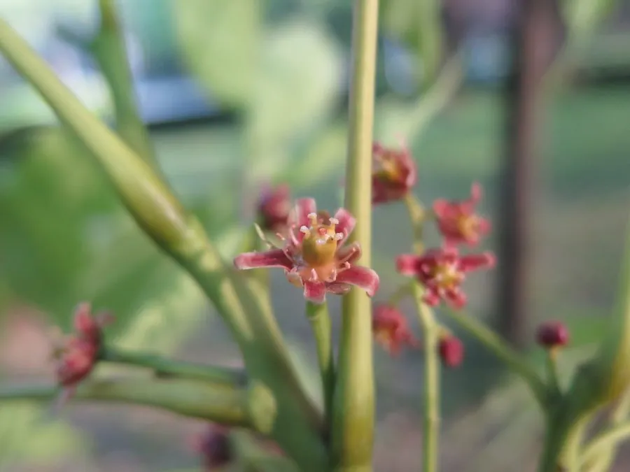

乔木 · 植物界
南酸枣 Choerospondias axillaris

漆树科南酸枣属落叶乔木，核果橙黄可食，果核顶端有五个小孔，常被串成念珠，是南方常见的乡土果树。
- 分类
- 门被子植物门纲木兰纲目无患子目科漆树科属南酸枣属
- 栖息环境
- 海拔 1000 米以下的沟谷与山坡疏林，喜温暖湿润、阳光充足
- 地理分布
- 中国广东、广西、福建、浙江、江西、湖南、湖北、四川、贵州、云南；印度、尼泊尔、中南半岛
- 保护级别
- 暂无评估；未被列入国家重点保护野生植物名录
物种志
南酸枣为漆树科南酸枣属落叶乔木，高可达二十米，树皮灰褐色、纵裂，树冠宽广。奇数羽状复叶，小叶七至十五片，卵状披针形，全缘，表面深绿。花杂性，雌雄同株，组成圆锥花序，花小，淡紫色，花期四月；核果椭圆形，成熟时橙黄色，果肉黏滑，果核坚硬、顶端有五个小孔，果期八至十月。
南酸枣分布于中国广东、广西、福建、浙江、江西、湖南、湖北、四川、贵州、云南等地，印度、尼泊尔、中南半岛也有，多生于海拔一千米以下的沟谷和山坡疏林中。它喜温暖湿润和充足阳光，适宜深厚肥沃、排水良好的土壤，生长迅速。果肉酸甜可食，可制果酱和饮料；果核可作活性炭，五个小孔使其常被串成五眼六通念珠；树皮可提取栲胶。南酸枣是南方重要的乡土果树和绿化树种。
形态与习性
- 株高可达 20 m，树冠宽广
- 花期4 月，圆锥花序淡紫色
- 果期8–10 月，核果橙黄色
- 光照喜光，幼树稍耐阴
- 水分喜湿润，忌积水
- 土壤深厚肥沃的壤土
- 主要用途果可食，果核制念珠与活性炭
趣味知识
- 南酸枣的果核顶端有五个小孔，可穿绳成串，被称为五眼果或五眼六通。
- 它的果肉黏滑、酸甜可口，南方常用它制作酸枣糕和果酱。
- 南酸枣生长迅速、树冠宽广，是山区水土保持和四旁绿化的好树种。